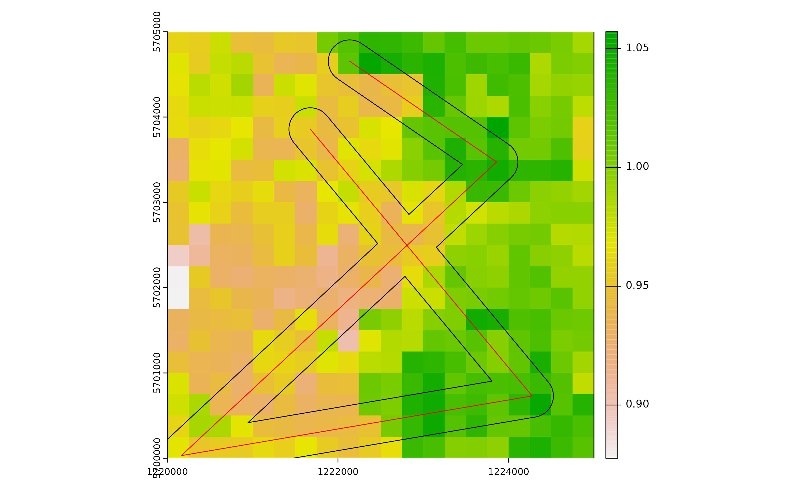
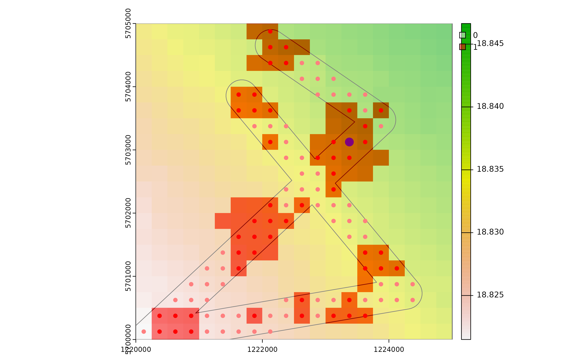
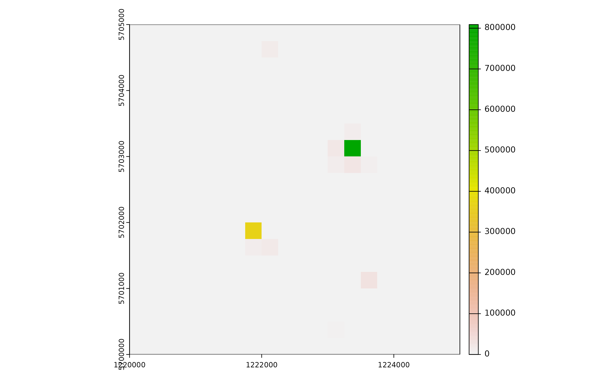
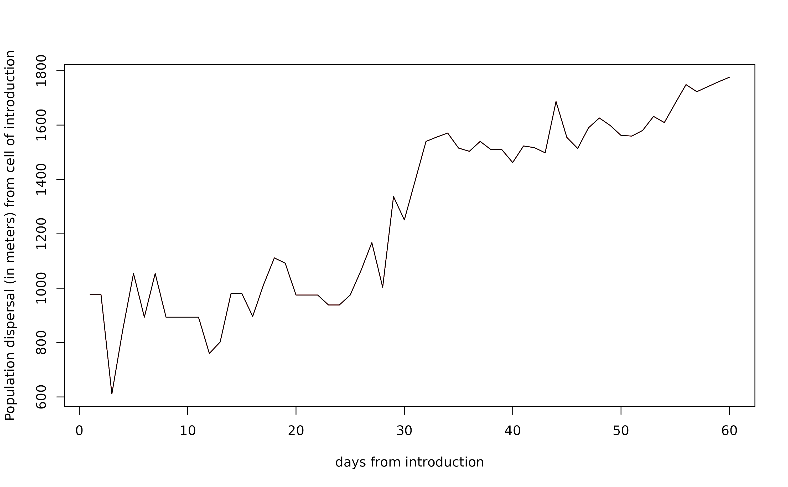

vignettes/dynamAedes_02_local.Rmd
dynamAedes_02_local.RmdThis tutorial explains step-by-step the main features of dynamAedes package, a unified modelling framework for invasive Aedes mosquitoes. Users can apply the stochastic, time-discrete and spatially-explicit population dynamical model initially developed in Da Re et al., (2021) for Aedes aegypti and then expanded for other three species: Ae. albopictus, Ae. japonicus and Ae. koreicus Da Re et al., (2022).
The model is driven by temperature, photoperiod and intra-specific larval competition and can be applied to three different spatial scales: punctual, local and regional. These spatial scales consider different degrees of spatial complexity and data availability, by accounting for both active and passive dispersal of the modelled mosquito species as well as for the heterogeneity of input temperature data.
We will describe the model applications for Ae. albopictus and for all spatial scales by using a simulated temperature dataset.
At the “local scale”, the model captures the nuances of both active and passive mosquito dispersal. In this context, three essential datasets are required::
Temperature Matrix: A spatially and temporally defined numerical temperature matrix, with rows representing space and columns signifying time, all measured in degrees Celsius.
Coordinates Matrix: A two-column numerical matrix detailing the coordinates for each spatial unit or cell.
Distance Matrix: A numerical representation highlighting the distance (in meters) between cells that are interconnected via a road network.
For the sake of clarity and simplicity in this tutorial, we will work with the following simulated datasets:
Initially, we’ll establish the physical space designated for the mosquito introduction.
We’ll construct a squared lattice arena with:
# Libraries
library(gstat)
library(terra)
library(eesim)
library(dynamAedes)
library(ggplot2)
Sys.setlocale("LC_TIME", "en_GB.UTF-8")# [1] ""
gridDim <- 20 # 5000m/250 m = 20 columns and rows
xy <- expand.grid(x=1:gridDim, y=1:gridDim)After establishing the lattice arena, we’ll introduce a spatial pattern to it. This pattern becomes crucial when we aim to incorporate spatial autocorrelation (SAC) into the temperature time series later on.
To achieve this spatial autocorrelation:
varioMod <- gstat::vgm(psill=0.005, range=100, model='Exp') # psill = partial sill = (sill-nugget)
# Set up an additional variable from simple kriging
zDummy <- gstat::gstat(formula=z~1,
locations = ~x+y,
dummy=TRUE,
beta=1,
model=varioMod,
nmax=1)
# Generate a randomly autocorrelated predictor data field
set.seed(123)
xyz <- predict(zDummy, newdata=xy, nsim=1)# [using unconditional Gaussian simulation]Having defined our spatial pattern, we can now generate a spatially autocorrelated raster. We’ll achieve this by incorporating the SA variable, denoted as xyz$sim1, into the SpatRaster object.
It’s worth noting that such a spatially autocorrelated surface might, for instance, depict the distribution of vegetation cover within an urban landscape, providing valuable context and depth to our model.
utm32N <- "+proj=utm +zone=32 +ellps=WGS84 +datum=WGS84 +units=m +no_defs"
r <- terra::rast(nrow=gridDim, ncol=gridDim, crs=utm32N, ext=terra::ext(1220000,1225000, 5700000,5705000))
terra::values(r) <- xyz$sim1
plot(r, main="SAC landscape")
# convert to a data.frame
df <- data.frame("id"=1:nrow(xyz), terra::crds(r))
bbox <- terra::as.polygons(terra::ext(r), crs=utm32N)
# Store Parameters for autocorrelation
autocorr_factor <- terra::values(r)We simulate a 1-year temperature time series with seasonal trend. For the time series we consider a mean value of 16°C and standard deviation of 2°C.
ndays <- 365*1 #length of the time series in days
set.seed(123)
sim_temp <- eesim::create_sims(n_reps = 1,
n = ndays,
central = 16,
sd = 2,
exposure_type = "continuous",
exposure_trend = "cos1", exposure_amp = -1.0,
average_outcome = 12,
outcome_trend = "cos1",
outcome_amp = 0.8,
rr = 1.0055)A visualisation of the distribution of temperature values and temporal trend.
hist(sim_temp[[1]]$x,
xlab="Temperature (°C)",
main="Histogram of simulated temperatures")
plot(sim_temp[[1]]$date,
sim_temp[[1]]$x,
main="Simulated temperatures seasonal trend",
xlab="Date", ylab="Temperature (°C)"
)Once we have our spatially autocorrelated raster, the next step is to spatially distribute our temperature time series. We achieve this by multiplying the time series with the autocorrelated surface we generated in the previous step.
By doing so, we incorporate spatial variability into the temperature data, ensuring that the temperature values differ across the landscape in a manner consistent with the underlying spatial pattern (e.g., vegetation cover). This offers a more realistic representation of how temperatures might vary across different areas due to various environmental factors.
mat <- do.call(rbind, lapply(1:ncell(r), function(x) {
d_t <- sim_temp[[1]]$x*autocorr_factor[[x]]
return(d_t)
}))A comparison between the distribution of the initial temperature time series and autocorrelated temperature surface
par(mfrow=c(2,1))
hist(mat, xlab="Temperature (°C)", main="Histogram of simulated spatial autocorreled temperature")
hist(sim_temp[[1]]$x, xlab="Temperature (°C)", main="Histogram of simulated temperatures", col="red")
par(oldpar) In many real-world scenarios, mosquitoes do not just disperse naturally – they often hitch rides and spread to new areas, especially through human transportation methods. In the context of our model, this concept is termed as “medium-range passive dispersal”.
To account for this mechanism of dispersal, we introduce an arbitrary road segment into our spatial domain. This road segment will represent pathways along which adult mosquitoes can disperse passively, most notably through car traffic.
set.seed(123)
roads <- vect(terra::crds(terra::spatSample(bbox, 5, method="random")),
type="lines",
crs=utm32N)
# Check simulated segment
plot(r)
terra::plot(roads, add=TRUE)After defining the road segment we add a “buffer” of 250 m around the road segment. Adult mosquitoes that reach or develop into cells comprised in the 250 buffer around roads are thus able to undergo passive dispersal.
# Create a buffer around the converted polygon
buff <- terra::buffer(roads, width=250)
# Check grid, road segment and buffer
plot(r)
plot(buff, add=T)
plot(roads, add=T, col="red")
Next, we derive a distance matrix between cells comprised in the spatial buffer along the road network. First, we select the cells.
df_sp <- vect(x=df, geom=c("x", "y"), crs=utm32N)
df_sp <- terra::intersect(df_sp, buff)
# Check selected cells
plot(r)
plot(buff, add=T)
plot(df_sp, add=T, col="red")Then, we compute the Euclidean distance (in meters) between each selected cell.
Define a two-column matrix of coordinates to identify each cell in the lattice grid.
As for model requirement, the distance matrix must have col names corresponding to rows in the original raster and equal to row names.
Moreover, distances in the distance matrix must be rounded to the thousands.
dist_matrix <- apply(dist_matrix,2,function(x) round(x/1000,1)*1000)
storage.mode(dist_matrix) <- "integer"
# An histogram showing the distribution of distances of cells along the road network
hist(dist_matrix, xlab="Distance (meters)")Select a cell that intersect roads for introduction:
set.seed(123)
icellcoords <- df[sample(row.names(dist_matrix),1),c(2:3)]
set.seed(123)
icellid <- df[sample(row.names(dist_matrix),1),1]
plot(r)
plot(buff, add=T)
plot(df_sp, add=T, col="red")
plot(vect(x=icellcoords, geom=c("x", "y"), crs=utm32N), add=T, col="blue", cex=2)We are now left with a few model variables which need to be defined.
## Define cells along roads into which introduce propagules on day 1
intro.vector <- icellid
## Define the day of introduction (June 1st is day 1)
str <- "2000-07-01"
## Define the end-day of life cycle (August 1st is the last day)
endr <- "2000-09-01"
## Define the number of adult females to be introduced
ia <- 10000
## Define the number of model iterations
it <- 1 # The higher the number of simulations the better
## Define the number of liters for the larval density-dependent mortality
habitat_liters <- 100
##Define average trip distance
mypDist <- 1000
## Define the number of parallel processes (for sequential iterations set nc=1)
cl <- 1
## Define proj4 string
utm32N <- "+proj=utm +zone=32 +ellps=WGS84 +datum=WGS84 +units=m +no_defs" Finally, let us prepare the temperature matrix. Float numbers in the temperature matrix would slow the computational speed, thus we first multiply them by 1000 and then transform them in integer numbers.
w <- sapply(df_temp[,as.POSIXlt(str)$yday:as.POSIXlt(endr)$yday], function(x) as.integer(x*1000))In this section, we will demonstrate how to run the
dynamAedes.m function from the dynamAedes
package, providing the necessary settings and input data. Here a recap
of the model parameters and settings:
species: Specifies the mosquito species to be modelled.
In this example, we’re simulating for the “albopictus” species.scale: Defines the spatial scale of the simulation.
Here, “lc” represents the local scale.jhwv: Represents the habitat in liters. In our example,
this is provided by the variable habitat_liters.temps.matrix: The temperature matrix that drives the
model. For this, we use w.cells.coords: The coordinates for each space-unit
(cell). We use cc for this.lat and long: Latitude and Longitude
coordinates. These are specific to our study area.coords.proj4: The projection of the coordinates, which
is utm32N in this example.road.dist.matrix: The distance matrix for the cells
connected through a road network.avgpdisp: Defines the average mosquito passive
dispersal.intro.cells: Cells where mosquitoes are introduced.
Specified by intro.vector.startd and endd: Starting and ending dates
for the simulation.n.clusters: Number of clusters for parallel execution,
defined by cl.iter: Number of iterations for the simulation.intro.adults: Number of introduced adults, provided by
ia.compressed.output: If TRUE, the output will be
compressed (no substages).cellsize: The size of each cell in the simulation. Set
to 250 meters here.maxadisp: The maximum mosquito active dispersal
distance.dispbins: Number of dispersal bins (discrete units of
dispersal distance).seeding: If TRUE, the seeding process will be executed
(for reproducibility).verbose: If FALSE, suppresses additional messages
during the simulation.Now, let’s execute the model:
simout <- dynamAedes.m(species="albopictus",
scale="lc",
jhwv=habitat_liters,
temps.matrix=w,
cells.coords=cc,
lat=50.80,
long=4.44,
coords.proj4=utm32N,
road.dist.matrix=dist_matrix,
avgpdisp=mypDist,
intro.cells=intro.vector,
startd=str,
endd=endr,
n.clusters=cl,
iter=it,
intro.adults=ia,
compressed.output=TRUE,
cellsize=250,
maxadisp=600,
dispbins=10,
seeding=FALSE,
verbose=FALSE
)This simulation, with the provided settings, takes approximately 1
minute to complete. The result of the simulation will be stored in the
simout object.
A first summary of simulations can be obtained with:
summary(simout)# Summary of dynamAedes simulations:
# ----------------------------------
# Species: Aedes albopictus
# Scale: LOCAL
# Start Date: 2000-07-01
# End Date: 2000-09-01
# Number of Iterations: 1
# Introduced Stage: adult
# Number Introduced: 10000
# Is Output Compressed?: Yes
# Water in the System: 100 L
# Min days with population: 61
# Max days with population: 61The simout object is a S4 object where simulation outputs and related details are saved in different slot:
For example, the number of model iterations is saved in:
simout@n_iterationsThe simulation output is stored in:
simout@simulationWhich is a list where the the first level stores
simulation of different iteration, while the
secondcorresponds to the simulated days in the
corresponding iteration. If we inspect the first iteration, we observe
that the model has computed length(simout[[1]]) days, since
we have started the simulation on the 1st of July and ended on the 1st
of August.
length(simout@simulation[[1]])# [1] 61The third level corresponds to the quantity of individuals for each stage (rows) in each day within each grid cell of the landscape (columns). If we inspect the first day within the first iteration, we obtain a matrix having:
dim(simout@simulation[[1]][[1]])# [1] 4 400We can now use the auxiliary functions of the package to Analyse the results.
First, we can retrieve the probability of successful introduction, computed as the proportion of model iterations that resulted in a viable mosquito population at a given date.
psi(simout, eval_date = 60)# Days_after_intro p_success stage
# 1 Day 60 1 PopulationWe can also get a spatial output thanks to the function psi_sp, which requires the matrix of the centroid coordinates of pixels as only additional input.
psi.output <- psi_sp(input_sim = simout, eval_date = 60, n.clusters=cl)Then we can plot everything to have an overview on mosquito population dynamics and movements given road network and average temperature surface.
values(r) <- round(rowMeans(df_temp/1000),5)
cols <- colorRampPalette(c("transparent", "red"))(2)
plot(r, legend=FALSE)
plot(buff, add=T)
plot(df_sp, add=T, col="red")
plot(vect(x=icellcoords, geom=c("x", "y"), crs=utm32N), add=T, col="blue", cex=2)
plot(r, legend.only=TRUE, horizontal = TRUE, legend.args = list(text='Temperature',line=-3.5), add=T)
plot(psi.output, alpha=0.5, add=T, legend.args = list(text='Prob colonisation', x.intersp=2), col=cols) At local scale, the interpretation of this output is more nuanced than for the other scales: a pixel having psi=0 can be a pixel where all the simulations resulted in an extinction or where the species has not yet arrived through dispersal. To understand the value of the pixels may be useful to iterate the psi_sp function along the vector of simulated days.
We can now compute the interquantile range abundance of the simulated population using the function adci over the whole landscape.
dd <- max(simout) #retrieve the maximum number of simulated days
# Compute the inter-quartile of abundances along the iterations
breaks=c(0.25,0.50,0.75)
ed=1:dd
# type "O" derives a non-spatial time series
outdf <- rbind(
adci(simout, eval_date=ed, breaks=breaks, stage="Eggs", type="O"),
adci(simout, eval_date=ed, breaks=breaks, stage="Juvenile", type="O"),
adci(simout, eval_date=ed, breaks=breaks, stage="Adults", type="O"),
adci(simout, eval_date=ed, breaks=breaks, stage="Dia", type="O")
)Then we can look at the time series of the population dynamics stage by stage at the whole landscape level.
outdf$stage <- factor(outdf$stage, levels= c('Egg', 'DiapauseEgg', 'Juvenile', 'Adult'))
outdf$Date <- rep(seq.Date(as.Date(str), as.Date(endr) - 2, by="day"), 4)
ggplot(outdf, aes(x=Date, y=X50., group=factor(stage), col=factor(stage))) +
ggtitle("Ae. albopictus Interquantile range abundance") +
geom_ribbon(aes(ymin=X25., ymax=X75., fill=factor(stage)),
col="white",
alpha=0.2,
outline.type="full") +
geom_line(linewidth=0.8) +
labs(x="Date", y="Interquantile range abundance", col="Stage", fill="Stage") +
facet_wrap(~stage, scales = "free_y") +
theme_light() +
theme(legend.pos="bottom",
text = element_text(size=16),
strip.text = element_text(face = "italic"))We can also have a spatial output of quantiles of the abundance distribution of a given life stage and for a given simulated day by using the function adci. For example for eggs:
# LOCAL scale input simulation provided# Compressed simulation provided# Computing spatio-temporal abundance estimate.
terra::plot(r[[2]]) Note that if only a small number of mosquitoes are present in a pixel over many iterations, quantiles may be 0 (especially for low quantiles) and you may see a series of empty rasters!
Compute a summary of the number of invaded cells over model iterations
# 25% 50% 75% day
# V1 2 2 2 1
# V2 2 2 2 2
# V3 5 5 5 3
# V4 4 4 4 4
# V5 4 4 4 5
# V6 4 4 4 6
tail(xcells)# 25% 50% 75% day
# V55 54 54 54 55
# V56 56 56 56 56
# V57 59 59 59 57
# V58 60 60 60 58
# V59 63 63 63 59
# V60 68 68 68 60Derive estimates of mosquito dispersal (in km^2) of the simulated mosquito populations (only when scale = “lc”) for any simulated day (in this case for 60 days from start and end of the simulate period).
albo.disp <- dici(simout,
eval_date=seq(1,60,length.out=60),
breaks=c(0.25,0.50,0.75),
space=FALSE)
plot(`0.25`~day, albo.disp, type="l",
ylab="Population dispersal (in meters) from cell of introduction",
xlab="days from introduction")
lines(`0.5`~day, albo.disp, type="l", col="red")
lines(`0.75`~day, albo.disp, type="l")